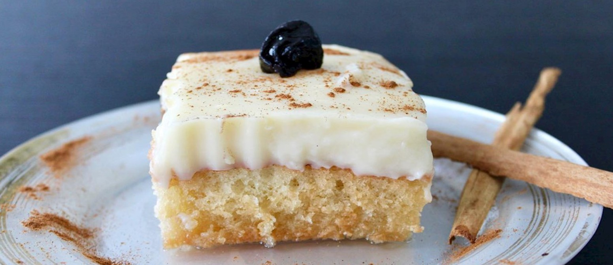

Pio Quinto
Pio quinto is a traditional custard cake that is drenched in rum, then dusted with cinnamon. It is traditionally made with a combination of flour and pinol (toasted white cornmeal). Sometimes, raisins and prunes are added to the cake for extra flavor.
The cake is often served at special occasions such as Christmas. It is believed that this festive dessert was named after Pope Pius V.
Ingredients
- Flour (all-purpose)
- Cornmeal (fine white pinol)
- Sugar
- Eggs
- Milk
- Butter
- Baking powder
- Vanilla extract
- Salt
Syrup / Soaking Ingredients
- Rum
- Sugar
- Water
- Cinnamon sticks
- Whole cloves
- Lemon peel
Topping (Custard / Atolillo)
- Milk
- Sugar
- Egg yolks
- Cornstarch
- Cinnamon stick
- Vanilla extract
- Ground cinnamon (for dusting)
Optional Ingredients
- Raisins
- Prunes